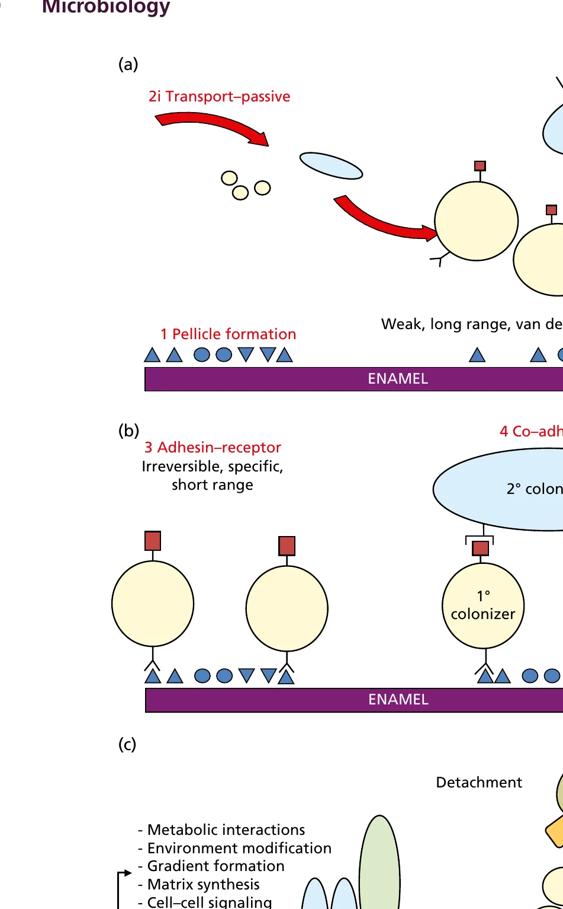
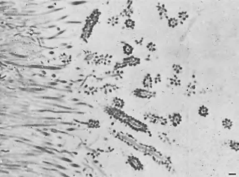

نسخه استخراجشده؛ ترجمه یا تأیید علمی انجام نشده است. وضعیت: captured
ظرف چند ثانیه تا دقیقه پس از تمیز کردن دندان، لایهای نازک از گلیکوپروتئینهای بزاقی روی سطح مینا رسوب میکند.

این لایه فاقد باکتری است.
دو نقش متضاد دارد: از یک سو مینا را در برابر اسید محافظت میکند، از سوی دیگر محل اتصال اولین باکتریها را فراهم میآورد.
تشکیل پلیکل: ثانیهها تا دقیقهها
چسبندگی برگشتپذیر: باکتری با نیروهای ضعیف مانند واندروالس به پلیکل نزدیک میشود؛ در این مرحله هنوز بهراحتی شسته میشود.
چسبندگی برگشتناپذیر: اتصال اختصاصی ادهسین باکتری به گیرنده پلیکل. از اینجا به بعد شستوشو کافی نیست.
همتجمعی (Coaggregation): باکتریهای جدید به باکتریهای مستقر میچسبند.
بلوغ: ساخت ماتریکس و شکلگیری معماری سهبعدی.
| مرحله | باکتریهای شاخص | ویژگی |
|---|---|---|
| کلونیزرهای اولیه | Streptococcus sanguinis، S. oralis، Actinomyces | عمدتاً گرم مثبت و هوازی یا بیهوازی اختیاری |
| پلزننده | Fusobacterium nucleatum | به هر دو گروه میچسبد؛ حلقه واسط حیاتی |
| کلونیزرهای ثانویه | Porphyromonas gingivalis، Tannerella forsythia، Treponema denticola | عمدتاً گرم منفی و بیهوازی اجباری |
⚠️ نقش کلیدی فوزوباکتریوم: کلونیزرهای ثانویه نمیتوانند مستقیماً به پلیکل بچسبند. بدون فوزوباکتریوم بهعنوان پل، پاتوژنهای اصلی پریودنتال هرگز جای پایی پیدا نمیکنند.
📌 جهت کلی تغییر: از گرم مثبت هوازی به سمت گرم منفی بیهوازی؛ همین چرخش، گذار از سلامت به بیماری را رقم میزند.
بیوفیلم تودهای بینظم از باکتری نیست؛ ساختاری سازمانیافته دارد:

میکروکلونیهای قارچیشکل که در ماتریکس پلیساکارید خارجسلولی (EPS) جاسازی شدهاند.
کانالهای آبی بین میکروکلونیها که مواد غذایی را میرسانند و مواد زائد را خارج میکنند؛ یک سیستم گردش ابتدایی.
گرادیان اکسیژن: سطح بیوفیلم هوازی و عمق آن بیهوازی است؛ به همین دلیل بیهوازیهای اجباری در عمق زنده میمانند.
| فوقلثهای | زیرلثهای | |
|---|---|---|
| غالب | گرم مثبت، هوازی | گرم منفی، بیهوازی |
| منبع غذایی | بزاق و رژیم غذایی | مایع شیار لثه و بافت میزبان |
📌 پلاک زیرلثهای سه بخش دارد: چسبیده به دندان، چسبیده به بافت و شناور. بخش چسبیده به بافت مستقیماً با اپیتلیوم درگیر است و بیشترین نقش را در تخریب دارد.